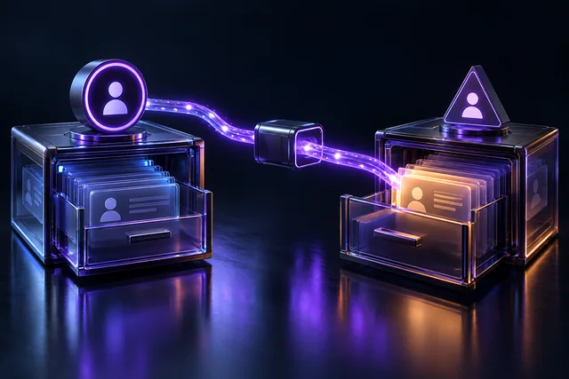
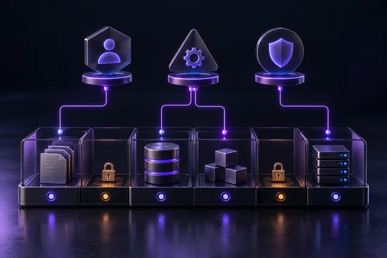
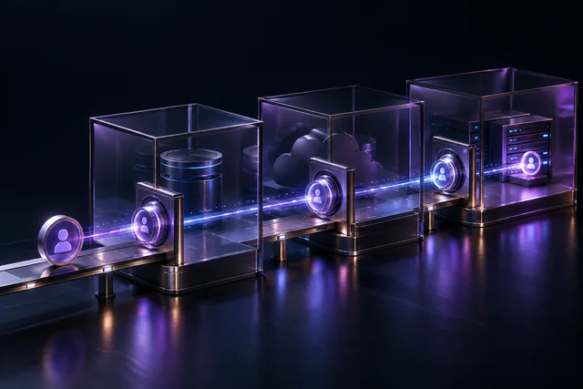

Cyber Coffee — Banco de capasT1 · E7 · 08/10/2026Prompt injection não tem patch
IA/Agentes
prompt-injection

T1 · E8 · 15/10/2026BOLA
AppSec hands-on
bola

T1 · E9 · 22/10/2026RBAC na prática
Controle de Acesso
rbac
T1 · E10 · 29/10/2026LGPD para devs
Dados/Privacidade
lgpd-developers
T1 · E11 · 05/11/2026SSO com Entra ID
Controle de Acesso
entra-sso
T1 · E12 · 12/11/2026Analytics (Clarity)
Dados/Privacidade
privacy-analytics
T1 · E13 · 19/11/2026Dados sensíveis em seguro
Dados/Privacidade
insurance-data
T1 · E14 · 26/11/2026Risco contratual SaaS/LGPD
Dados/Privacidade
saas-contract-risk
T2 · E1 · 07/01/2027Passkeys
Identidade
passkeys
T2 · E2 · 14/01/2027Hash de senha e JWT
Criptografia
password-hash-jwt
T2 · E3 · 21/01/2027Supply chain/SBOM/SLSA
Supply Chain
supply-chain
T2 · E4 · 28/01/2027Least privilege na nuvem
Cloud & IAM
cloud-least-privilege
T2 · E5 · 04/02/2027Segurança de contêiner
Cloud & Infra
container-security

T2 · E6 · 11/02/2027Zero Trust na prática
Cloud & Infra
zero-trust
T2 · E7 · 18/02/2027Segurança mobile
Mobile
mobile-security
T2 · E8 · 25/02/2027Adoção de controles de AppSec pela engenharia
Liderança Técnica
engineering-appsec-adoption
T2 · E9 · 04/03/2027CVSS e gestão de vulnerabilidade
Operação de Segurança
cvss-vulnerability-management
T2 · E10 · 11/03/2027Observabilidade (SIEM)
Operação de Segurança
siem-observability
T2 · E11 · 18/03/2027Resposta a incidente
Operação de Segurança
incident-response
T2 · E12 · 25/03/2027IA além de prompt injection
Segurança & IA
ai-beyond-prompt-injection